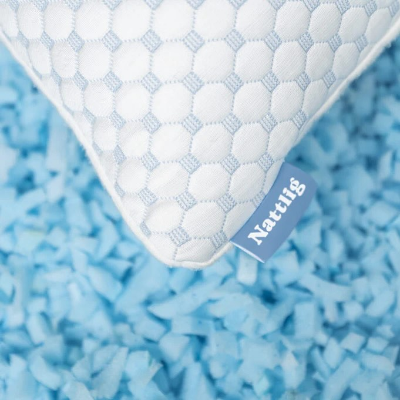

★★★★★
4,8/5
Bestill — 899 kr
Du tar ut akkurat så mye drømmeskum som passer deg — uansett om du sover på siden, ryggen eller magen. Yttertrekket har en behagelig kjøligere side i bambusfiber.

Vanlige puter er bygd for et gjennomsnitt. For høy for noen, for lav for andre, for fast for de fleste. Nattlig kommer overfylt med drømmeskum — du tar ut til den passer akkurat din nakke.
Du tar ut akkurat så mye drømmeskum at nakken hviler i en rett linje — uansett om du sover på siden, ryggen eller magen.

Puta fyller gapet mellom hode og skulder slik at øre, skulder og hofte ligger på samme linje.

Lett støtte i nakkesvingen — uten å skyve hodet for langt frem og knekke nakken.
Lav profil for å minimere vridning av nakken. Mange sover bedre helt uten pute under hodet.
Demo: justering tar under et minutt

Drømmeskum-biter ligger i et indre trekk inne i puten — ikke en fast blokk. Spretter tilbake natt etter natt. Holder formen i flere år, der dunputer klapper sammen.

Pustende bambusfiber. Den ene siden har en cooling coating som er behagelig svalere når du legger deg ned — vri puten når du sover varmt. Trekket tas av og vaskes på 30°C.
Mens dunputer mister formen og må byttes hvert år eller to, holder ekte minneskum lenger — og kan fylles på fra boksen din om den synker.
Vi sier ⚠️ der vi mener det — ikke alle ❌. Du sammenligner ikke med et halmstrå.
| Vanlig pute dun / syntetisk |
Tempur fast skum-blokk |
Nattlig justerbar minneskum |
|
|---|---|---|---|
| Tilpasses din nakke | ✗ Bygd for gjennomsnitt | ⚠ Fast form, du må passe den | ✓ Du justerer høyden |
| Holder formen over tid | ✗ Klapper sammen, byttes etter 1–2 år | ✓ Holder formen, men kan ikke justeres | ✓ Holder formen — fyll på fra boksen om nødvendig |
| Funker for flere sovestillinger | ⚠ Funker best for én | ✗ Én form, ingen justering | ✓ Justeres per posisjon |
| Temperatur | ⚠ Holder på varme | ✗ Skum bygger varme | ✓ Kjøligere putevar-side |
| Pris | 200–600 kr | 2 500–4 000 kr | 899 kr + 90 netter prøv |
| Prøvegaranti | ✗ | ⚠ Ofte 60 netter | ✓ 90 netter, gratis retur |
 t.classList.remove('border-nattlig')); this.classList.add('border-nattlig')">
t.classList.remove('border-nattlig')); this.classList.add('border-nattlig')">
Sov på den i 90 netter. Hvis du ikke elsker den, sender vi pengene tilbake. Ingen spørsmål.
Hvis du ikke elsker puten etter 90 netter — kontakt oss. Vi sender deg gratis returetikett og betaler tilbake hver krone.
Veldig fast. Den er full med drømmeskum med vilje — slik at du har materialet du trenger til å justere ned til DIN passform. De fleste tar ut opp mot halvparten for å få ønsket mykhet. Skummet du tar ut oppbevarer du i Nattlig-boksen puten kom i — du kan legge det tilbake når som helst.
Det avhenger av sovestillingen. Sidesovere har ofte 12–18 cm høyde. Ryggsovere 11–13 cm. Magesovere 5–10 cm. Du kan justere når du vil — og legge tilbake fyll hvis du tar ut for mye.
Helt OK. Du oppbevarer skummet du tar ut i Nattlig-boksen — den er på størrelse med en skoeske og er brandet med Nattlig. Vil du legge tilbake en håndfull eller tre? Åpne glidelås, fyll på, jevne ut. 30 sekunder.
Puten sendes vakuumpakket i en Nattlig-brandet pappeske. Når du åpner den, bruker den ca. 10 minutter på å strekke seg ut til full form. Etter det er den klar til justering. Den lukter ingenting ved åpning — ingen off-gassing.
Nei. Trekket har en bambusfiber-side med cooling coating — behagelig svalere når du legger deg ned. Men det er ikke is-kald, og det holder seg ikke iskaldt i åtte timer. Vri puten når du sover varmt.
De fleste rapporterer endring innen 7–14 netter. Minneskum har en innkjøringsperiode der formen tilpasser seg deg. Gi puta minst 14 dager før du dømmer.
Lenger enn en dunpute. Vanlige dunputer klapper sammen og må byttes etter 1–2 år. Ekte minneskum holder formen mye lenger. Skulle puten synke litt over tid, legger du tilbake drømmeskum fra boksen din — så har du en frisk pute igjen.
Yttertrekket tas av og maskinvaskes på 30°C — det er det laget med cooling coating og bambusfiber. Det indre trekket og drømmeskummet luftes (ikke vask). Tørketrommel er ikke OK.
Ja. 50×70 cm er standard nordisk størrelse. Den passer i alle norske putevar.

Det vanligste valget hos par. Samme produkt — du justerer din pute, partneren justerer sin. Ingen "feil side av sengen" lenger.
Bestill 2 stk — 1 198 kr →